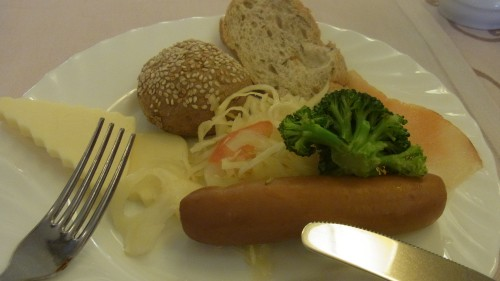
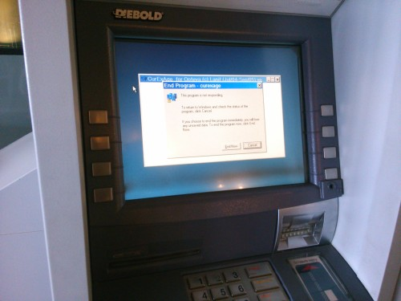
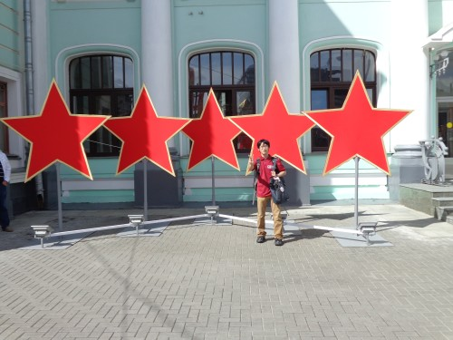
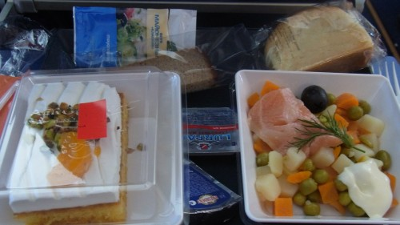
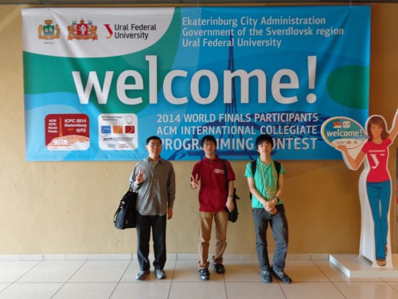
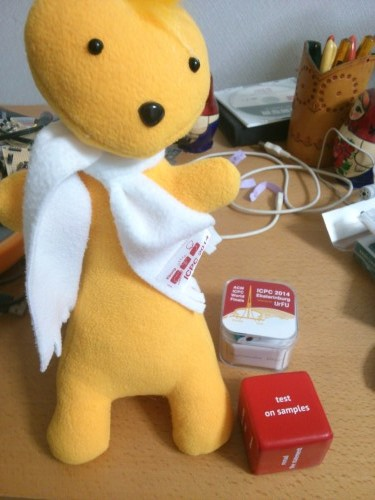
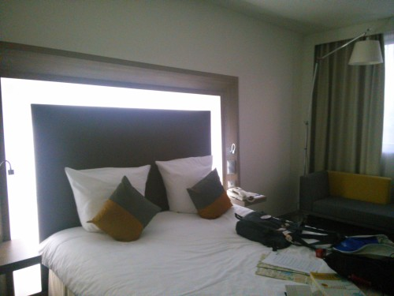
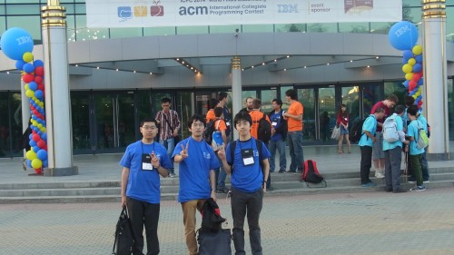
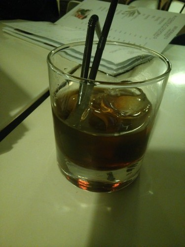

ICPC World Finals 2014 2日目
2日目 (2014/06/22)
iPadで目覚ましをかけたつもりが、時間になっても鳴らなかった。ria_raiくんにモーニングコールで起こされる。
ホテルで朝食。魚の塩漬けがおいしい。でもやはり塩が強い。あと、Каша（ロシア粥）がおすすめと言われていたので食べてみたら確かにおいしかった。

部屋に帰ってこのあとどうするか作戦会議しながらだらだらしていたら結構時間を潰してしまったので、観光は諦めることにして空港に向かう。
ホテルロビーのATMがエラー画面を出していた。大丈夫か。

今度は地下鉄で迷わず、無事にベラルースカヤ駅へ到着。
外には赤い星のモニュメントがあった。ロシアを感じる。

Aeroexpressに乗ろうとしたら出発した直後で、30分待つことになり、空港に着いたのは結局1時間前くらいになってしまった。変に観光とかしなくてよかった。
飛行機の中で、インドのIIIHチームの人が隣になって少し話した。Codechefのポロシャツを着ていたので聞いてみると、どうやらインドでは、ICPC WFに出場するとCodechefからシャツがもらえるらしい。すごい。
2時間ちょいのフライトなのに機内食が出た。適当な見た目だけど、味は悪くない。

エカテリンブルグ着。荷物引取場にICPCの広告がでかでかと出ていた。

荷物を回収してホテルへ。記念品とか、コンテスト用サイコロとか、マスコットのぬいぐるみ（Urfooというらしい）をもらう。

コンテスト用サイコロは、各面に”test on samples” とか “print it” とか “submit is the best test” とか書いてあって、迷ったら振ると道を示してくれる便利アイテム。他にも文房具やナップザックをもらった。
なぜかベッドのある壁が光る。

とこはるさんとmikecatさんの部屋でだらだらしながら持ち物を確認していて、パスポートのコピーを忘れたことに気づいた。ICPCのDachboardにスキャンの画像自体は上げてあるので、プリントだけできる場所がないかフロントで聞いたら、2階でできると教えてもらった。
パスポートコピーを印刷して、Team Registerationへ。バスの時間をちゃんと確認していなくて、割り当ての時間より15分くらい遅れてしまった。大会のレセプションはКосмосというレセプションホールで行われる。着いたら金属探知ゲートがあって、いちいち検査を受けないと中に入れない仕組みだった。厳しい。

Team Registerationであずにゃんを、She is Goddess of win!!!とか適当なことを言いながら預ける。その後はチームTシャツをもらって、写真を撮って食事。この時点で22時くらいで、遅かったせいか食事がほとんど食べつくされていた……。残っているものから、適当に牛肉を選んだら固かった。キノコやひき肉の炒めものが中に入っているパンがあって、これは冷めていてもかなりおいしかった。
宿に帰ってから、とこはるさんと京大の@ichyoさんと、ホテルのバーで酒を飲む。Black Russianというカクテルを頼んだ。

ウオッカとカルーアっぽい味。100ccくらいで350ルーブル（約1000円）で、今まで飲んだ酒では一番高いんじゃないかという感じだった。
部屋に帰って、シャワーを浴びて就寝。